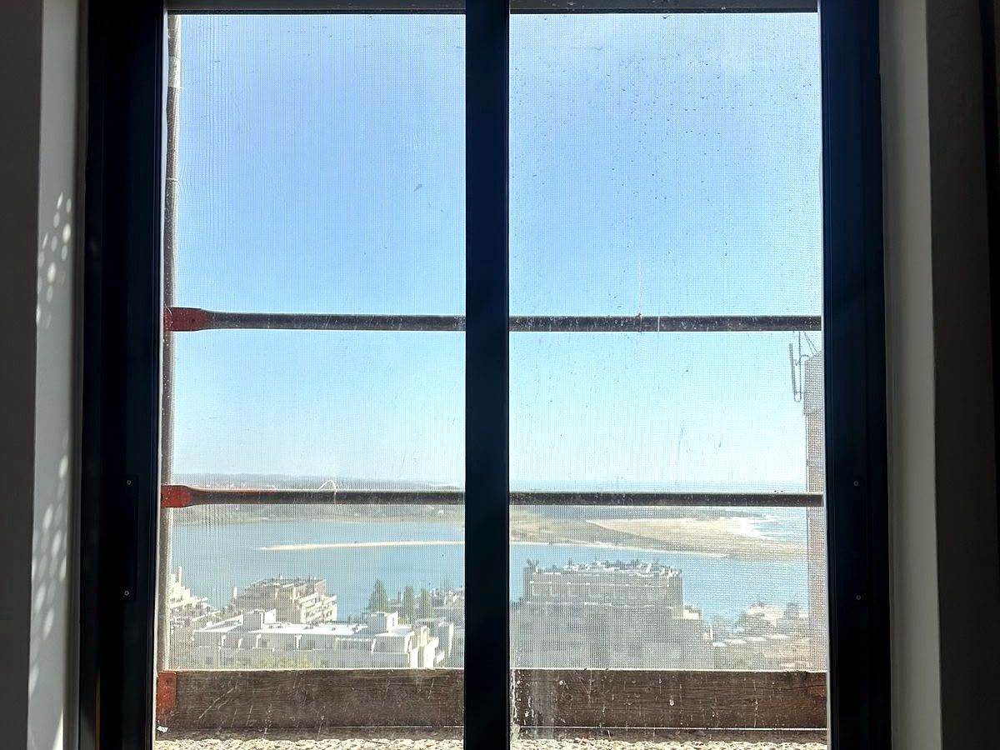
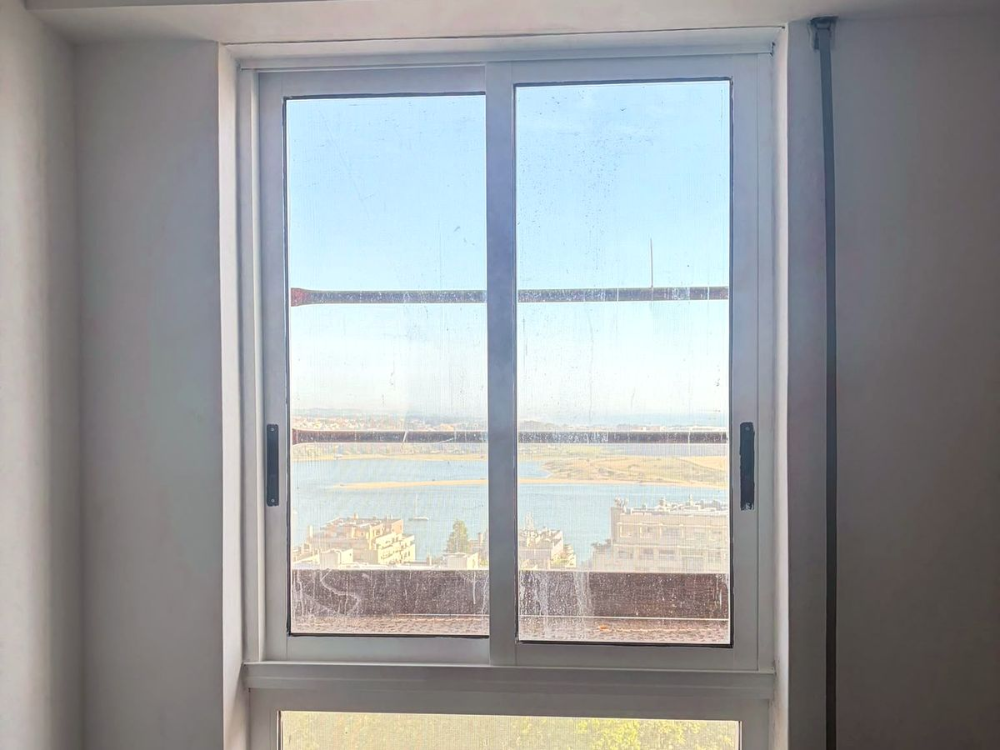
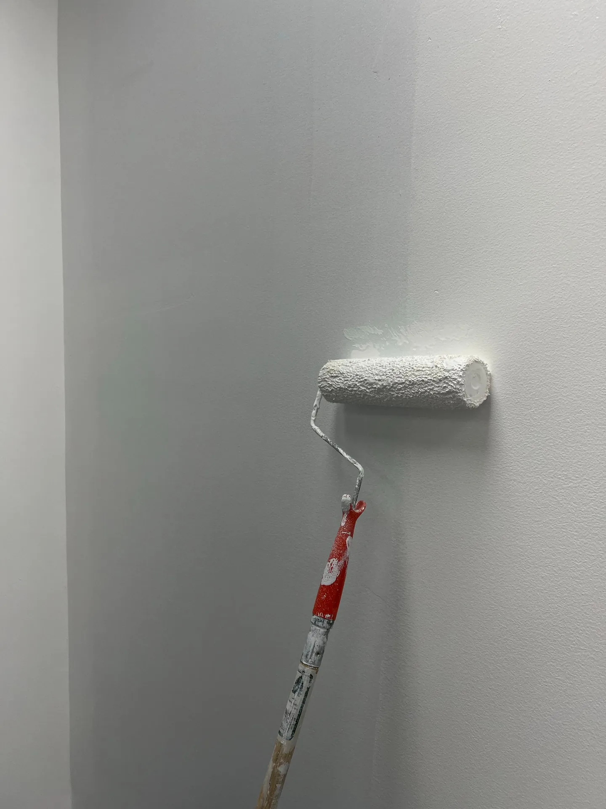

Pinturas
com acabamento
Paredes e tetos, madeiras e caixilharia. Preparamos, protegemos o que fica, e entregamos um acabamento limpo — como as janelas que passaram de castanho a branco.
Uma pintura má vê-se logo: salpicos no vidro, riscos no rodapé, tinta a descascar meses depois. A Dizarro trata da preparação — lixar, limpar, tapar fissuras — antes de dar a primeira demão, e protege o chão, os móveis e os vidros.
O que fazemos
- Pintura de paredes e tetos, interior
- Esmalte de madeiras: portas, rodapés, caixilharia
- Caixilharia de castanho para branco (lixagem + primário + esmalte)
- Preparação: reparar fissuras, betumar, lixar e primário
- Proteção de chão, móveis e vidros com fita e plástico
- Pequenos retoques e mudança de cor de uma divisão
Como trabalhamos
Vemos o estado das superfícies, dizemos o que é preciso e quantas demãos, e protegemos tudo antes de abrir a lata. No fim, retiramos as fitas, limpamos e conferimos consigo.
Exemplo real
Apartamento em Matosinhos, Porto: caixilharia de madeira castanha lixada, com primário de aderência e duas demãos de esmalte branco — janelas a condizer com os interiores, sem trocar a caixilharia.
Antes & depois — obra real
Caixilharia de madeira: de castanha, lixada e preparada, a pintada de branco a condizer com os interiores.



